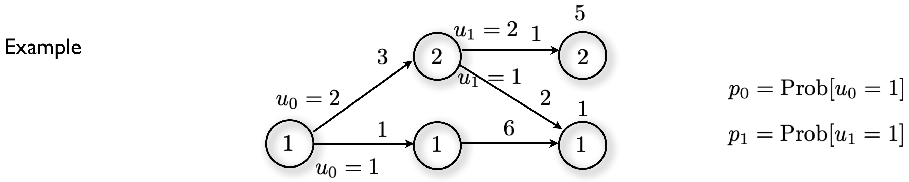
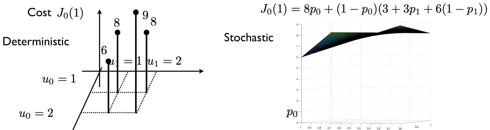
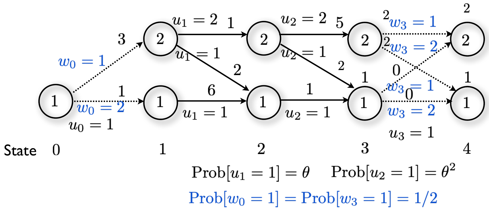
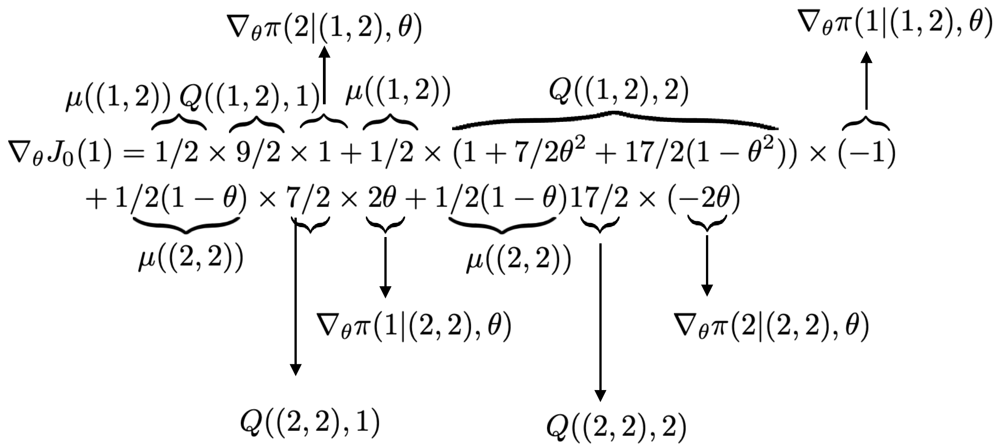

Unit 13 – Policy Gradient and Actor-Critic Methods
4SC000 Optimal Control and Reinforcement Learning
Slides · Exercises · Jupyter notebooks
1 Where this unit sits in the course
Every method in Units 10 to 12 works the same way at the moment of acting. Something – a table, a network, a set of linear features – holds an estimate of the cost-to-go, and the control is whatever minimises that estimate:
\[u_k=\arg\min_{u_k\in U_k(x_k)}\mathbb{E}\big[g_k(x_k,u_k,w_k)+\tilde J_{k+1}(f_k(x_k,u_k,w_k))\big].\]
This is approximation in value space, and deep Q-learning, simulation-based policy iteration, SARSA, semi-gradient TD and LSTD are all instances of it. The policy is never represented; it is recomputed from the value estimate every time a decision is needed.
This unit takes the other road. Approximation in policy space picks the policy directly out of a parameterised family,
\[u_k=\mu_k(x_k,r_k), \qquad r_k \ \text{the parameters},\]
and searches the parameter space, judging each parameter by what it costs in simulation. A state feedback gain is such a family; so is a neural network mapping states to actions. No cost-to-go is estimated at all. Policy gradient methods are the subject of the first half of this unit.
The two ideas are not rivals, and the second half of the unit combines them: actor-critic methods carry a parameterised policy and a parameterised cost approximation, each improving the other. That is the combination promised at the start of the course – approximation in value space and in policy space at the same time – and it is where modern reinforcement learning has largely settled.
One remark on signs before anything else. This course minimises a cost, so every parameter update in this unit is a gradient descent, \(\theta_{k+1}=\theta_k-\gamma(\cdots)\). The reinforcement learning literature maximises a reward and writes the same algorithms as ascent. Nothing else differs; if you read REINFORCE elsewhere and find a plus sign, that is why.
2 Parameterising a policy
2.1 Why the policy has to be stochastic
Start with finite state and input spaces, where a deterministic policy is just a table: one action per state. There are finitely many such tables, and the cost is a number attached to each. There is nothing to differentiate – the cost, viewed as a function of “the policy”, is defined only at isolated points. Searching such a family means trying the points one by one, and exhaustive search over policies is hopeless for any problem worth solving.
Allowing the policy to randomise changes this completely. Let the policy be described not by which action it takes but by the probability with which it takes each one. Those probabilities are continuous quantities, the cost is an expectation over them, and an expectation over a finite set is a polynomial in the probabilities – as smooth as anything could be.

For the graph of Fig. 1 the cost of the initial state can be written out in one line. Taking \(u_0=1\) costs \(1\), then \(6\), then the terminal \(1\), for a total of \(8\); taking \(u_0=2\) costs \(3\) and then leaves the stage-\(1\) decision, worth \(2+1=3\) if \(u_1=1\) and \(1+5=6\) if \(u_1=2\). Hence
\[J_0(1)=8p_0+(1-p_0)\big(3+3p_1+6(1-p_1)\big).\]

Fig. 2 is the whole argument in one picture. On the left, four stems: the four deterministic policies and nothing between them. On the right, the same four numbers reappear at the corners of the unit square, now joined by a surface that can be walked downhill. Randomising the policy has not added any policy that was not available before – the cost is linear in each \(p_k\) separately, so its minimum over the square is always attained at a corner – but it has made the search differentiable. That is the only reason the randomisation is there.
Using \(J_0(1)=8p_0+(1-p_0)\big(3+3p_1+6(1-p_1)\big)\), write down the cost of each of the four deterministic policies, and say which one is optimal. Then check your answer against the stems in Fig. 2. Finally: is the cost monotone in \(p_0\)?
A deterministic policy is a corner of the square. Setting \(p_0=1\) gives \(J_0(1)=8\) whatever \(p_1\) is, because the trajectory never reaches the stage-\(1\) decision – that accounts for two of the four. Setting \(p_0=0\) leaves \(3+3p_1+6(1-p_1)\), which is \(6\) at \(p_1=1\) and \(9\) at \(p_1=0\). So the four values are
\[(u_0,u_1)=(1,1):8, \qquad (1,2):8, \qquad (2,1):6, \qquad (2,2):9,\]
matching the four stems \(6,8,9,8\) in the figure. The optimum is \(u_0=2\), \(u_1=1\), with cost \(6\): take the expensive first edge in order to reach the cheap terminal state.
For the last part, simplify to \(J_0(1)=8p_0+(1-p_0)(9-3p_1)\), so
\[\frac{\partial J_0(1)}{\partial p_0}=8-(9-3p_1)=3p_1-1,\]
which is negative for \(p_1<1/3\) and positive for \(p_1>1/3\). The cost is not monotone in \(p_0\): whether raising the probability of \(u_0=1\) helps depends on what the policy intends to do afterwards. This is the first appearance of something that runs through the whole unit – the value of a decision is only defined relative to the policy that follows it.
2.2 Preferences and the soft-max
The policy may be parameterised in any way at all, subject to one requirement: it must be differentiable in its parameters. Write
\[\pi(\underline u\mid\underline x,\theta)=\text{Prob}[u_k=\underline u\mid x_k=\underline x]\]
for discrete control and state spaces, and
\[\text{Prob}[u_k\in A\mid x_k=\underline x]=\int_A\pi(\underline u\mid\underline x,\theta)\,d\underline u\]
for continuous ones, where \(\pi(\cdot\mid\underline x,\theta)\) is then a probability density. The underlining distinguishes a particular value of the state or input from the random variable \(x_k\) or \(u_k\).
For discrete spaces the standard construction assigns a real preference \(h(\underline x,\underline u,\theta)\) to each state-action pair and turns the preferences into probabilities by exponentiating and normalising – the soft-max policy,
\[\pi(\underline u\mid\underline x,\theta)=\frac{e^{h(\underline x,\underline u,\theta)}}{\sum_be^{h(\underline x,b,\theta)}}.\]
Three properties make this the default choice. The probabilities are automatically positive and sum to one, so the parameters are unconstrained and no projection is ever needed. The map is smooth, so the differentiability requirement holds by construction. And the preferences themselves can be anything differentiable – a linear function \(h=\theta^\intercal\phi(\underline x,\underline u)\) of features, or the output of a neural network, exactly as in Unit 12 but now producing a policy instead of a cost-to-go.
A consequence worth noticing early: a soft-max policy can never be exactly deterministic. It can approach a deterministic policy, by driving the preference of one action far above the others, but it reaches it only in the limit. Since the optimum usually is deterministic, policy gradient methods typically converge by having their parameters run off to infinity. The same phenomenon appears for continuous action spaces as a policy whose standard deviation shrinks toward zero – which is precisely what happens in this unit’s notebooks.
3 The policy gradient theorem
3.1 What the theorem says
With the policy parameterised, the cost is a function of \(\theta\):
\[J(\theta)=\mathbb{E}_{\pi_\theta}[C],\]
where \(C\) is the problem’s own cost, either
\[\textbf{finite horizon}\qquad C=\mathbb{E}_{w_k}\Big[\sum_{k=0}^{h-1}g(x_k,u_k)+g_h(x_h)\Big]\]
or
\[\textbf{infinite horizon, discounted}\qquad C=\mathbb{E}_{w_k}\Big[\sum_{k=0}^{\infty}\alpha^kg(x_k,u_k)\Big].\]
The expectation \(\mathbb{E}_{\pi_\theta}\) is over the actions drawn from the policy; the inner \(\mathbb{E}_{w_k}\) is over the disturbances. With that in hand the method writes itself,
\[\theta_{k+1}=\theta_k-\gamma\nabla_\theta J(\theta_k),\]
and the only question left is how to get \(\nabla_\theta J(\theta)\) without a model.
That is what the policy gradient theorem provides. It states that the gradient is proportional to
\[\nabla_\theta J(\theta)\propto\sum_{\underline x}\mu(\underline x)\sum_{\underline u}Q_\pi(\underline x,\underline u)\,\nabla_\theta\pi(\underline u\mid\underline x,\theta),\]
where
\[\mu(\underline x)=\text{Prob}[x_k=\underline x]\]
is the probability of visiting state \(\underline x\) under the current policy – in a finite-horizon problem the state is understood to include the stage, so \(\underline x\) is a pair (stage, state) – and \(Q_\pi(\underline x,\underline u)\) is the Q-factor of the policy \(\pi(\cdot\mid\cdot,\theta)\), that is, the cost of taking \(\underline u\) now and following \(\pi\) thereafter.
Look at the shape of the expression before anything else. On the left is the gradient of the cost. On the right is the gradient of the policy – a function the designer chose and can differentiate in closed form – multiplied by two quantities, \(\mu\) and \(Q_\pi\), that describe the system’s behaviour but are never differentiated. The dynamics \(f_k\) and the cost \(g_k\) do not appear anywhere. That is the content of the theorem: it converts a derivative that would need the model into one that needs only quantities that can be sampled.
Two caveats. First, the proportionality: with \(\mu\) as defined above, for a finite-horizon problem, the constant is \(1\) and the relation is an equality – this is checked explicitly in the example below. In the discounted infinite-horizon case \(\mu\) is a discounted occupancy measure and the constant depends on how it is normalised, which is why the theorem is usually stated with \(\propto\). It does not matter in practice, because a constant factor is absorbed into the step size \(\gamma\). Second, the theorem is a statement about the exact gradient; turning it into an algorithm means replacing \(\mu\) and \(Q_\pi\) by samples, and the rest of this unit is about how.
3.2 A worked example
The example on the slides is worth following line by line, because it is the one place in the unit where the theorem can be checked against a derivative computed the ordinary way.

The lattice of Fig. 3 is small enough that the cost can be written down in closed form. Starting from state \(1\) at stage \(0\), the disturbance \(w_0\) decides the row: with probability \(1/2\) the trajectory goes to the bottom row, where there are no decisions left at all, and with probability \(1/2\) it goes to the top row, where both decisions are live. Writing both branches out,
\[J_0(1)=\tfrac12\big(1+6+1+\tfrac22+\tfrac12\big)+\tfrac12\Big(3+\theta\big(2+1+\tfrac22+\tfrac12\big)+(1-\theta)\big(1+\theta^2(2+\tfrac22+\tfrac12)+(1-\theta^2)(5+\tfrac42+\tfrac32)\big)\Big).\]
Each half-fraction is a terminal expectation: \(\tfrac22+\tfrac12\) is \(\tfrac12(0+2)+\tfrac12(0+1)\), the average of the two terminal costs reached from the bottom state at stage \(3\) at no edge cost, and \(\tfrac42+\tfrac32\) is \(\tfrac12(2+2)+\tfrac12(2+1)\), the same average from the top state, where both edges cost \(2\).
Collecting terms, and recognising the Q-factors inside,
\[J_0(1)=\tfrac{19}{4}+\tfrac12\big(3+\tfrac92\theta\big)+\tfrac12(1-\theta)\Big(1+\tfrac72\theta^2+\tfrac{17}{2}\big(1-\theta^2\big)\Big),\]
which expands to the cubic
\[J_0(1)=11-\tfrac52\theta-\tfrac52\theta^2+\tfrac52\theta^3.\]
The slide gives the constant in the second display as \(25/4\) rather than \(19/4\), while keeping the \(3\) inside the following bracket. That counts the \(3\) twice and overstates the cost by \(3/2\). Either constant is defensible on its own – \(25/4\) is correct if the \(3\) is dropped from the bracket, \(19/4\) if it is kept – but not both at once. The gradient on the slide is unaffected, since a constant differentiates away.
Now the ingredients of the theorem. There are exactly two states at which a decision is taken, written as (stage, state) pairs: \((1,2)\) and \((2,2)\). Their visitation probabilities are
\[\mu((1,2))=\tfrac12, \qquad \mu((2,2))=\tfrac12(1-\theta),\]
since reaching the top row at stage \(1\) requires \(w_0=1\), and remaining there at stage \(2\) requires in addition that \(u_1=2\), which has probability \(1-\theta\). The four Q-factors are
\[Q((1,2),1)=\tfrac92, \qquad Q((1,2),2)=1+\theta^2\tfrac72+(1-\theta^2)\tfrac{17}{2},\]
\[Q((2,2),1)=\tfrac72, \qquad Q((2,2),2)=\tfrac{17}{2}.\]
Each is read off the lattice directly: \(Q((2,2),2)\), for instance, is the cost \(5\) of the top edge plus the terminal average \(\tfrac42+\tfrac32\) from the top state at stage \(3\), which is \(5+\tfrac72=\tfrac{17}{2}\). Note that \(Q((1,2),2)\) depends on \(\theta\) while the other three do not: taking \(u_1=2\) leaves a further decision to be made, and the value of that branch depends on how the policy will make it.
Finally the policy gradients. The parameterisation is \(\pi(1\mid(1,2),\theta)=\theta\) and \(\pi(1\mid(2,2),\theta)=\theta^2\), so
\[\nabla_\theta\pi(1\mid(1,2),\theta)=1, \quad \nabla_\theta\pi(2\mid(1,2),\theta)=-1, \quad \nabla_\theta\pi(1\mid(2,2),\theta)=2\theta, \quad \nabla_\theta\pi(2\mid(2,2),\theta)=-2\theta.\]

Putting the pieces together, the theorem’s sum has four terms, one per (decision state, action) pair:
\[\nabla_\theta J_0(1)=\underbrace{\tfrac12}_{\mu((1,2))}\times\underbrace{\tfrac92}_{Q((1,2),1)}\times\underbrace{1}_{\nabla_\theta\pi(1\mid(1,2),\theta)}+\tfrac12\times\Big(1+\tfrac72\theta^2+\tfrac{17}{2}(1-\theta^2)\Big)\times(-1)\]
\[+\underbrace{\tfrac12(1-\theta)}_{\mu((2,2))}\times\underbrace{\tfrac72}_{Q((2,2),1)}\times\underbrace{2\theta}_{\nabla_\theta\pi(1\mid(2,2),\theta)}+\tfrac12(1-\theta)\times\tfrac{17}{2}\times(-2\theta),\]
which collects to
\[\nabla_\theta J_0(1)=\tfrac{15}{2}\theta^2-5\theta-\tfrac52,\]
and that is exactly the derivative of the cubic above. Not proportional to it – equal to it. For a finite-horizon problem with \(\mu\) the probability of occupying a (stage, state) pair, the constant in the theorem is one.
On the top row of the figure, the factor \(1\) that multiplies \(Q((1,2),1)\) is labelled \(\nabla_\theta\pi(2\mid(1,2),\theta)\) and the factor \((-1)\) that multiplies \(Q((1,2),2)\) is labelled \(\nabla_\theta\pi(1\mid(1,2),\theta)\). The two belong the other way round: \(\pi(1\mid(1,2),\theta)=\theta\) has gradient \(+1\), and it is action \(1\) whose Q-factor is \(9/2\). The labels on the bottom row are correct. The pairing written out above is the right one.
What should be taken from this example is not the arithmetic but the correspondence. Every term of the derivative, computed by ordinary calculus on a closed-form expression, turns out to factor into a visitation probability, a Q-factor and a policy gradient. Nothing else appears, and in particular no derivative of a transition probability or of a cost. The theorem says this always happens.
The cost of Fig. 3 is \(J_0(1)=11-\tfrac52\theta-\tfrac52\theta^2+\tfrac52\theta^3\), and \(\theta\) is a probability, so it is confined to \([0,1]\). Find the minimiser, and say what deterministic policy it corresponds to. What is unusual about where gradient descent stops, compared with the policies in Fig. 1?
The derivative \(\tfrac{15}{2}\theta^2-5\theta-\tfrac52\) factors as \(\tfrac52(3\theta+1)(\theta-1)\), with roots \(\theta=-1/3\) and \(\theta=1\). On \([0,1]\) only the second is relevant, and the derivative is negative throughout the interior – it is \(-5/2\) at \(\theta=0\) and rises to \(0\) at \(\theta=1\). So the cost falls monotonically from \(J_0(1)=11\) at \(\theta=0\) to
\[J_0(1)=\tfrac{17}{2} \quad\text{at}\quad \theta=1.\]
At \(\theta=1\) both \(\text{Prob}[u_1=1]=\theta\) and \(\text{Prob}[u_2=1]=\theta^2\) equal one, so the optimum is the deterministic policy that takes \(u=1\) – the diagonal, downward edge – at both decisions.
What is unusual is that \(\theta=1\) is a genuine stationary point: the derivative vanishes there. In Fig. 1 the optimum also sat at a corner, but the gradient did not vanish at it, so plain gradient descent would have marched into the constraint and needed to be projected back. Here it does not: the steps shrink to nothing as \(\theta\) approaches \(1\), and the iteration converges to the boundary from the inside. The difference comes from the parameterisation, not from the problem – tying \(\text{Prob}[u_2=1]\) to \(\theta^2\) makes the cost cubic rather than multilinear. This is worth remembering when reading the Unit 13 exercises, where the untied version of the same situation behaves like Fig. 1 and the tied version does not.
4 From the theorem to an algorithm
4.1 Intermezzo: stochastic gradient descent
The same intermezzo appeared in Unit 12, and it is repeated here because both of this unit’s algorithms are instances of it. Whenever the update involves the gradient of an expected value, or the expected value of a gradient,
\[\theta_{k+1}=\theta_k-\gamma\nabla_\theta\mathbb{E}_w\big[V(\theta,w)\big],\]
a stochastic gradient method simply replaces the expectation by a single realisation of \(w\),
\[\theta_{k+1}=\theta_k-\gamma\nabla_\theta V(\theta,w).\]
The individual steps are wrong; their average is right, and that is enough. When \(V\) is convex in \(\theta\) the method converges to the optimal parameter under the usual conditions on the step sizes. The price is variance, and in this unit the price is unusually high.
4.2 All actions
Return to the theorem and read the outer sum as what it is – an expectation over the states the policy visits:
\[\nabla_\theta J(\theta_k)\propto\mathbb{E}_\mu\Big[\sum_{\underline u}Q_\pi(x_k,\underline u)\,\nabla_\theta\pi(\underline u\mid x_k,\theta_k)\Big].\]
Now apply the intermezzo. Replace the expectation over states by the state actually visited at step \(k\) of a simulation, and the resulting update is
\[\theta_{k+1}=\theta_k-\gamma\sum_{\underline u}Q_\pi(x_k,\underline u)\,\nabla_\theta\pi(\underline u\mid x_k,\theta_k).\]
This is the all actions method. It is a perfectly sound algorithm, and for a small discrete action set there is little reason not to use it. Its weakness is the sum: it needs \(Q_\pi(x_k,\underline u)\) for every action, including the ones the policy did not take, and a continuous action space has infinitely many of them.
4.3 REINFORCE
REINFORCE removes the sum, replacing it by the single action actually taken. The step is the importance-sampling trick of Unit 11 in another costume: multiply and divide by the probability of the action.
\[\sum_{\underline u}Q_\pi(x_k,\underline u)\,\nabla_\theta\pi(\underline u\mid x_k,\theta_k)=\sum_{\underline u}\pi(\underline u\mid x_k,\theta_k)\,Q_\pi(x_k,\underline u)\,\frac{\nabla_\theta\pi(\underline u\mid x_k,\theta_k)}{\pi(\underline u\mid x_k,\theta_k)}\]
The right-hand side is now a weighted average over actions with the policy’s own weights – that is, an expectation over \(u_k\sim\pi\). So
\[\nabla_\theta J(\theta_k)\propto\mathbb{E}_\mu\mathbb{E}_\pi\Big[Q_\pi(x_k,u_k)\,\frac{\nabla_\theta\pi(u_k\mid x_k,\theta_k)}{\pi(u_k\mid x_k,\theta_k)}\Big],\]
and the sum over actions has become a sample of one. One quantity is still missing: \(Q_\pi(x_k,u_k)\), the cost of taking \(u_k\) and following the policy afterwards. REINFORCE estimates it the way Unit 11’s Monte-Carlo method did – by simply running the trajectory to the end and adding up what it cost. Call that realised cost \(G_k\). Applying the intermezzo a second time, to both expectations at once,
\[\theta_{k+1}=\theta_k-\gamma\,G_k\,\frac{\nabla_\theta\pi(u_k\mid x_k,\theta_k)}{\pi(u_k\mid x_k,\theta_k)}.\]
For each Monte-Carlo run:
- Initialise \(x_0\) randomly, apply \(\pi(\underline u\mid\underline x,\theta)\), and obtain the trajectory \(\big((x_0,u_0),(x_1,u_1),\dots,(x_{h-1},u_{h-1}),x_h\big)\).
- For each \(k\in\{0,1,\dots,h-1\}\) compute
\[\theta_{k+1}=\theta_k-\gamma\,G_k\,\frac{\nabla_\theta\pi(u_k\mid x_k,\theta_k)}{\pi(u_k\mid x_k,\theta_k)}, \qquad G_k=\sum_{t=k}^{h-1}g(x_t,u_t)+g_h(x_h).\]
The update is almost always written in the equivalent log form,
\[\theta_{k+1}=\theta_k-\gamma\,G_k\,\nabla_\theta\log\big(\pi(u_k\mid x_k,\theta_k)\big),\]
since \(\nabla_\theta\log\pi=\nabla_\theta\pi/\pi\). The log form is not merely tidier. For a soft-max policy the logarithm turns the quotient into a difference,
\[\nabla_\theta\log\pi(\underline u\mid\underline x,\theta)=\nabla_\theta h(\underline x,\underline u,\theta)-\sum_b\pi(b\mid\underline x,\theta)\,\nabla_\theta h(\underline x,b,\theta),\]
the gradient of the chosen action’s preference minus the policy’s average of all of them. No exponentials survive, and nothing is divided by a probability that may be tiny – which is both cheaper and far more numerically stable than evaluating \(\nabla_\theta\pi/\pi\) literally. Every implementation uses this form, including the ones in this unit’s notebooks.
Read the update in words. The trajectory is run; each action is scored by what the rest of the run cost; and each action’s probability is then pushed down in proportion to that cost. Expensive actions become less likely, cheap ones more likely – though notice that the comparison is with zero and not with what the policy usually achieves, which is the defect the next section repairs. Nothing else is needed – no model, no value function, no maximisation over actions. The absence of that last one is what makes the method work for continuous action spaces, where the \(\arg\min\) of value-space methods would itself be an optimisation problem at every time step.
4.4 What REINFORCE costs
The method’s strengths are the two just named: it handles continuous action spaces naturally, and it can represent genuinely stochastic policies, which matters whenever the optimal behaviour is to randomise.
Its weaknesses are both aspects of one thing. The gradient estimate has high variance, and the method needs careful tuning of the learning rate largely because of it. The variance has two sources that multiply each other. First, \(G_k\) is the sum of all the costs from step \(k\) to the end of the run – an unbiased estimate of \(Q_\pi(x_k,u_k)\), but one that absorbs every disturbance and every randomised action along the way, and whose spread therefore grows with the horizon. Second, the ratio \(\nabla_\theta\pi/\pi\) has the policy’s probability in the denominator, so a rarely-taken action produces a correspondingly large update – the same mechanism that made ordinary importance sampling noisy in Unit 11.
The rest of the unit is, essentially, the response to this.
5 Baseline subtraction
Here is the central trick. Suppose a function \(b(\underline x)\) of the state alone – it may not depend on the action – is subtracted from the Q-factor inside the theorem:
\[\nabla_\theta J(\theta_k)\propto\sum_{\underline x}\mu(\underline x)\sum_{\underline u}\big(Q_\pi(\underline x,\underline u)-b(\underline x)\big)\nabla_\theta\pi(\underline u\mid\underline x,\theta_k).\]
This changes nothing, because the term that was added vanishes identically:
\[-b(\underline x)\sum_{\underline u}\nabla_\theta\pi(\underline u\mid\underline x,\theta_k)=-b(\underline x)\nabla_\theta\Big(\sum_{\underline u}\pi(\underline u\mid\underline x,\theta_k)\Big)=-b(\underline x)\nabla_\theta(1)=0.\]
The sum of the policy’s probabilities over actions is one, whatever the parameters are, so its gradient is zero. Following the same steps as before through to the sampled update gives the REINFORCE algorithm with a baseline,
\[\theta_{k+1}=\theta_k-\gamma\big(G_k-b(x_k)\big)\frac{\nabla_\theta\pi(u_k\mid x_k,\theta_k)}{\pi(u_k\mid x_k,\theta_k)}.\]
The point is that while \(b\) is irrelevant to the exact gradient, it is very far from irrelevant to the sampled one. The quantity whose variance matters is \(G_k-b(x_k)\), and choosing \(b\) well can shrink it dramatically. This is variance reduction, and it is the single most effective modification of the basic method.
The natural choice of \(b\) is an estimate of the cost-to-go \(J_\pi(x_k)\) itself, since then \(G_k-b(x_k)\) measures how much better or worse this particular run turned out than the policy’s own expectation – a quantity that is centred near zero and does not grow with the horizon. Taking that choice seriously, and learning the estimate as the algorithm runs, is exactly what an actor-critic method is.
The calculation above shows that subtracting \(b(\underline x)\) leaves the gradient unchanged. Yet the whole point of doing it is that the algorithm behaves differently. Reconcile these two statements. And why must \(b\) be allowed to depend on the state but not on the action?
The cancellation is a statement about the expected value of the update, and two random variables with the same mean can have wildly different spreads. Writing \(w_k=\nabla_\theta\pi(u_k\mid x_k,\theta_k)/\pi(u_k\mid x_k,\theta_k)\) for the weight, REINFORCE’s step is \(G_kw_k\) and the baselined step is \((G_k-b(x_k))w_k\); both have the same mean, but
\[\text{Var}\big[(G_k-b)w_k\big]=\mathbb{E}\big[(G_k-b)^2w_k^2\big]-\big(\mathbb{E}[(G_k-b)w_k]\big)^2,\]
and only the first term depends on \(b\). Choosing \(b\) close to \(\mathbb{E}[G_k\mid x_k]=J_\pi(x_k)\) makes \((G_k-b)^2\) small while leaving the mean alone. Since stochastic gradient descent converges at a rate governed by the variance of its steps, that is a real improvement in a quantity the exact gradient simply does not see.
As for the restriction: the cancellation used \(\sum_{\underline u}\nabla_\theta\pi(\underline u\mid\underline x,\theta)=\nabla_\theta 1=0\), which requires \(b\) to come outside the sum over actions. If \(b\) depended on \(\underline u\) it could not be factored out, the sum \(\sum_{\underline u}b(\underline x,\underline u)\nabla_\theta\pi(\underline u\mid\underline x,\theta)\) would generally be non-zero, and the estimator would be biased – it would be descending a different function. The permitted freedom is exactly “anything the action does not influence”.
6 Actor-critic methods
6.1 Motivation and the division of labour
The two families met so far have complementary failings. Value-based methods – Q-learning and its descendants – are efficient and well-understood, but every decision requires minimising over the action set, which makes continuous action spaces awkward. Policy-based methods handle continuous actions effortlessly but suffer from the variance just described. Actor-critic methods keep both representations and let each cover the other’s weakness.
The division of labour is in the names. The actor is the parameterised policy \(\pi(\underline u\mid\underline x,\theta)\); it is what selects actions, and it is updated by the policy gradient. The critic is a parameterised approximation of the cost-to-go; it does not select anything, it only evaluates – it criticises the actor’s decisions. And the channel between them is the baseline: the critic’s estimate is what gets subtracted from the return in the actor’s update. There is no new theory here. An actor-critic method is REINFORCE with baseline subtraction, in which the baseline is learned rather than guessed.
6.2 Learning the critic
Concretely, replace the baseline by a parameterised cost approximation,
\[b(x_k)\ \longrightarrow\ \hat J(x_k,\alpha_k),\]
for weights \(\alpha_k\) learned online – by a neural network, or by any of Unit 12’s architectures.
Following the slides, \(\alpha_k\) here denotes the critic’s weight vector, not the discount factor. The discount is also written \(\alpha\) in this course, including on the slide that defines the discounted cost earlier in this unit. The two have nothing to do with each other. Unit 12 wrote the parameters of an approximation as \(r\), which would have avoided the clash; the deck’s choice is kept here so that the slides and these notes agree.
The critic’s weights are learned by the methods of Units 11 and 12, applied to the problem of evaluating the current policy. There are two candidates, and they are the two candidates of Unit 11. The Monte-Carlo version regresses the approximation onto the realised return,
\[\alpha_{k+1}=\alpha_k-\beta\big(G_k-\hat J(x_k,\alpha_k)\big)\nabla_{\alpha_k}\hat J(x_k,\alpha_k),\]
while the temporal-difference version replaces \(G_k\) by the one-step estimate \(g(x_k,u_k)+\hat J(x_{k+1},\alpha_{k+1})\):
\[\alpha_{k+1}=\alpha_k-\beta\big(g(x_k,u_k)+\hat J(x_{k+1},\alpha_{k+1})-\hat J(x_k,\alpha_k)\big)\nabla_{\alpha_k}\hat J(x_k,\alpha_k).\]
Here \(\beta\) is the critic’s step size, generally different from the actor’s \(\gamma\). The second update is the semi-gradient of Unit 12: the parameters appear in the target and are deliberately not differentiated. The trade is the familiar one – Monte-Carlo is unbiased but must wait for the end of the run and carries the full variance of the return, while TD is biased by its own current estimate but updates immediately and is far quieter.
The most common form of the method takes the TD route one step further and uses the same one-step estimate in the actor’s update as well, replacing \(G_k\) by \(g(x_k,u_k)+\hat J(x_{k+1},\alpha_{k+1})\) there too. The two updates then share a single quantity.
6.3 The algorithm
For each Monte-Carlo run:
- Initialise \(x_0\) randomly, apply \(\pi(\underline u\mid\underline x,\theta)\), and obtain \(\big((x_0,u_0),(x_1,u_1),\dots,(x_{h-1},u_{h-1}),x_h\big)\).
- For each \(k\in\{0,1,\dots,h-1\}\) compute
\[\textbf{critic}\qquad \alpha_{k+1}=\alpha_k-\beta\big(g(x_k,u_k)+\hat J(x_{k+1},\alpha_{k+1})-\hat J(x_k,\alpha_k)\big)\nabla_{\alpha_k}\hat J(x_k,\alpha_k)\]
\[\textbf{actor}\qquad \theta_{k+1}=\theta_k-\gamma\Big(g(x_k,u_k)+\hat J(x_{k+1},\alpha_{k+1})-\hat J(x_k,\alpha_k)\Big)\frac{\nabla_\theta\pi(u_k\mid x_k,\theta_k)}{\pi(u_k\mid x_k,\theta_k)}\]
The bracket is the same in both lines, and it is the temporal difference of Unit 11:
\[\delta_k=g(x_k,u_k)+\hat J(x_{k+1},\alpha_{k+1})-\hat J(x_k,\alpha_k).\]
One number, computed once per time step, used twice. The critic treats it as its own prediction error and corrects its weights by it. The actor treats it as the signed weight on the policy gradient: if \(\delta_k\) is negative the action turned out better than the critic expected, and its probability is increased; if positive, decreased. The critic’s job is to set the bar; the actor’s job is to chase actions that clear it.
That substitution – \(G_k-b(x_k)\) replaced by \(\delta_k\) – is the whole of the variance reduction, and it is worth seeing how large it is. \(G_k\) is a sum over the remainder of the run; \(\delta_k\) involves one cost and two evaluations of the critic. The spread of the first grows with the horizon, the spread of the second does not. The measurement in this unit’s notebooks puts the ratio of standard deviations at roughly \(100\) on a problem with a thousand steps per run.
Suppose the critic has converged, so that \(\hat J(x,\alpha)=J_\pi(x)\) exactly. What is the expected value of the temporal difference \(\delta_k\), conditioned on the state \(x_k\) and the action \(u_k\)? What is it conditioned on \(x_k\) alone? Use the answer to explain the name of the A2C variant below.
With the critic exact, and conditioning on both the state and the action, the expectation of the one-step estimate is by definition the Q-factor:
\[\mathbb{E}\big[g(x_k,u_k)+J_\pi(x_{k+1})\;\big|\;x_k,u_k\big]=Q_\pi(x_k,u_k),\]
so
\[\mathbb{E}[\delta_k\mid x_k,u_k]=Q_\pi(x_k,u_k)-J_\pi(x_k).\]
This difference is called the advantage of the action \(u_k\) at the state \(x_k\): how much better or worse taking \(u_k\) is than acting as the policy usually does. It is positive for actions that cost more than average and negative for ones that cost less – a cost-minimising convention, the reverse of the reward-maximising literature.
Conditioning on the state alone and averaging over the policy’s own actions gives zero, since \(\mathbb{E}_\pi[Q_\pi(x_k,u_k)\mid x_k]=J_\pi(x_k)\) by the definition of \(J_\pi\). So the actor’s weight is centred: on average over the actions it takes, the policy is neither rewarded nor penalised, and only the differences between actions at the same state drive the update. That is precisely what a good baseline should achieve, and it explains the name of A2C, advantage actor-critic – the algorithm is estimating, and descending, the advantage function.
6.4 Variants
The algorithm above is the basic form; the versions in use are refinements of it, and all five on the slide are worth being able to recognise.
A2C, advantage actor-critic, uses the advantage function explicitly as the actor’s weight – the quantity identified in the exercise above. A3C, asynchronous advantage actor-critic, runs several agents in parallel on separate copies of the environment and combines their updates, which decorrelates the data much as experience replay did in Unit 12. DDPG, deep deterministic policy gradient, allows the actor to be deterministic in a continuous action space, where differentiating through the action is possible even though the finite-action argument at the start of this unit does not apply. PPO, proximal policy optimisation, constrains how far the policy may move in a single update, which is the main practical fix for the step-size sensitivity named earlier. SAC, soft actor-critic, adds an entropy term that rewards the policy for staying random, so that exploration does not die out early – a failure mode the next section demonstrates.
7 The mountain car
The unit’s worked implementation is the classic mountain car. A car sits in a sinusoidal valley; the only available action is an acceleration, applied in either direction; the goal is to reach the flag on top of the right hill. The observations are the car’s position and velocity, both continuous, and the action is the acceleration, also continuous – which is the point of using it here, since the value-space methods of Units 10 to 12 would need a minimisation over that continuous set at every step.
The cost structure is the interesting part. Every time step incurs a cost of \(0.1\times(\text{action})^2\), penalising large accelerations, and reaching the flag earns \(100\). The car is underpowered: full throttle from rest will not climb the hill, and the only solution is to rock back and forth, building amplitude, until there is enough energy to get over. So the task is genuinely hard in a way the toy lattices of this unit are not – and it exposes something about policy gradient methods that is easy to miss.
Both algorithms were run on this problem; the notebooks A_13_MountainCarREINFORCE.ipynb and A_13_MountainCarActorCritic.ipynb contain the code and the measurements. Over 200 episodes from a fixed seed:
| first 20 episodes | last 50 episodes | best episode | episodes reaching the flag | final policy std | |
|---|---|---|---|---|---|
| REINFORCE | \(-23.08\) | \(-6.03\) | \(-0.01\) | \(0\) | \(0.0057\) |
| actor-critic | \(-1.45\) | \(-0.89\) | \(-0.00\) | \(0\) | \(0.0011\) |
Neither agent ever reaches the flag. Both converge, quickly and confidently, to a policy that does nothing at all – and both are right to, in the narrow sense that matters to a gradient method. A policy that never accelerates pays no action cost and scores about zero; any policy that explores pays the action cost and, until it happens to reach the flag, collects nothing in return. The \(+100\) is unreachable by small perturbations of the do-nothing policy, so the gradient points steadily towards doing less. The final policy standard deviations in the table are the collapse described earlier in this unit, measured: the policy has become deterministic, and exploration has stopped.
The comparison between the two rows is the instructive part. REINFORCE takes about \(29\) episodes to effectively stop acting; the actor-critic takes one. Measured along trajectories of one fixed policy, the spread of the quantity multiplying \(\nabla_\theta\log\pi\) is about \(0.28\) for REINFORCE’s return \(G_k\), and smaller for the actor-critic’s temporal difference \(\delta_k\) by a factor of roughly
\[\frac{\text{std}[G_k]}{\text{std}[\delta_k]}\approx 109.\]
So the critic does exactly what the theory promises: it reduces the variance of the gradient estimate by two orders of magnitude. And the consequence, on this problem, is that the agent commits to the wrong behaviour a great deal faster.
That is not an argument against actor-critic methods. It is a reminder that variance reduction and correctness are different things. A noisy gradient estimate is, incidentally and unreliably, a form of exploration; removing the noise removes that too. The remedies are the ones named in the variants section – an entropy bonus as in SAC, or an explicit floor on the policy’s standard deviation, which the REINFORCE notebook includes as an option – and they are separate machinery, deliberately added, not something the policy gradient theorem provides. The theorem computes a gradient. Whether the landscape that gradient descends leads anywhere good is a different question, and on this problem it does not.
8 Summary
Units 10 to 12 all represented the policy implicitly, through an estimate of the cost-to-go and a minimisation at decision time. This unit represents the policy directly, as a parameterised family, and searches the parameters.
The family must be stochastic. For a deterministic policy over a finite action set the cost is a handful of isolated numbers and there is nothing to differentiate; randomising joins those numbers by a smooth surface without adding any policy that was not already available. The soft-max construction, built on differentiable preferences, is the standard way to do it.
The policy gradient theorem expresses \(\nabla_\theta J(\theta)\) as a sum over states and actions of a visitation probability, a Q-factor and the gradient of the policy. Its significance is what is missing: the model appears nowhere, so the gradient can be estimated from simulation alone. The worked example confirms it term by term against an ordinary derivative.
REINFORCE is the stochastic-gradient realisation of the theorem – the expectation over states replaced by the state visited, the sum over actions replaced by the action taken, and the Q-factor replaced by the Monte-Carlo return \(G_k\). It needs no model, no value function and no minimisation over actions, which is what makes continuous action spaces easy. Its price is variance, inflated both by the long sum \(G_k\) and by the ratio \(\nabla_\theta\pi/\pi\).
Baseline subtraction is the response. Any function of the state alone may be subtracted from the Q-factor without changing the exact gradient, because the policy’s probabilities sum to one; but it changes the variance of the sampled gradient a great deal. The best baseline is an estimate of the cost-to-go.
Actor-critic methods learn that estimate online. The actor is the policy, the critic is the cost approximation, and the quantity passed between them is the temporal difference of Unit 11 – the critic’s prediction error, and the actor’s signed weight. Its conditional expectation is the advantage, which is where A2C gets its name. This is approximation in value space and in policy space working together, the combination promised at the start of the course.
What the mountain car adds is a warning. The critic reduces the variance of the gradient by roughly two orders of magnitude, exactly as advertised, and on that problem the result is that the agent settles into a bad local optimum faster. Policy gradient methods compute a gradient correctly; they do not, by themselves, explore. Keeping a policy exploring long enough to find a distant reward is a separate problem, and every serious variant of these algorithms carries separate machinery for it.